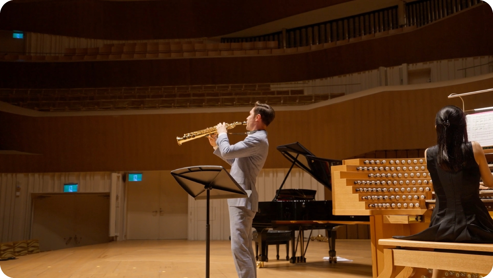

CHEN-YOU MIAO
剪輯
作品集
2026
衛武營國家藝術文化中心 音樂營
《萬彩協奏–
管風琴與薩克斯風》
剪輯方向：
Reels- 以管風琴節奏驅動畫面切換，強化專業與儀式感，並以字卡輔助宣傳師生音樂會。
紀錄短片- 敘事導向剪接：未知嘗試 → 歷程累積 → 演出成果
宣傳之餘，透過敘事剪接引導觀眾共同體驗音樂營的成長弧線
01 / 03
點我觀看(YouTube)
艸非火 x 光滿樓
南火之誕
剪輯方向：
Reels- 節奏化剪輯，拉近觀眾與作品距離
訪談宣傳- 以訪談結構引導，層層揭示創作理念與情感脈絡
第三屆馬祖國際藝術島
藝術家創作訪談
& Reels
剪輯方向：
訪談短片- 透過訪談梳理創作脈絡，帶出作品與馬祖在地文化交織而成的情感連結
Reels- 以輕鬆寫實的節奏，記錄並呈現藝術家的創作歷程
大工嘉義 - 嘉義市工藝展
藝術家創作訪談
剪輯方向：
訪談短片- 內容呈現創作歷程並介紹作品特色，讓觀眾理解工藝背後的思維與技巧，並由訪談與作品畫面交錯剪接，呈現創作細節
其它
活動紀錄、宣傳
剪輯方向：
透過節奏導向的剪輯手法做畫面切換，避免流水帳式紀錄；部分作品於關鍵段落加入訪談，強化活動主軸與參與者觀點，使影像同時兼具節奏感與內容深度。